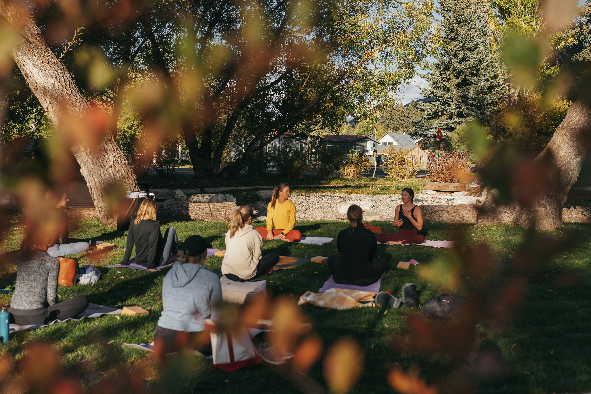

SATORI Festival Highlights




Discover the stories of participants who found peace, clarity, and connection through SATORI — a celebration of release and renewal.
Reserve Your LanternStep into the shared memories of SATORI — a reflection of past events, heartfelt stories, and captured moments. Here, you’ll find glimpses of what makes this gathering special — the people, the light, and the quiet transformations they inspire.